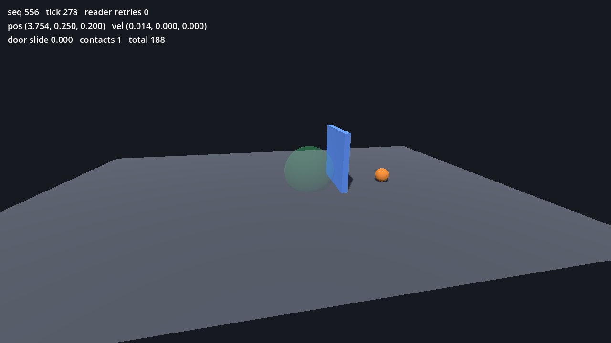

We turned a game engine's rules and physics into GPU kernels, so thousands of independent copies of a world run at once and every fault traces back to its source. We're raising $500,000 to take it from a working prototype to a simulation platform, starting with Godot and expanding to other engines and to world simulation beyond games.
Raising
$500KPre-seed
Runway
18 moTo seed-ready evidence
Measured
5.05MWorld-steps per second
Hardware
4 GPUsConsumer AMD cards
boulderresearch.aiOctober 2026 · Draft for discussion
Boulder Research01 · Summary
01 / The short version
We ran Mario as GPU kernels. Now we're doing it to a game engine.
Super Mario World already runs entirely as GPU kernels in our lab: one console per GPU lane, thousands of consoles at once. Warp Core brings that idea to Godot, a modern open-source engine. The world's rules and physics run on the GPU across thousands of copies, and Godot becomes the window you watch one of them through.
Warp Core is the architecture. Game state is a fixed memory layout, rules and physics are GPU kernels, and one world runs per lane. Read-only assets (meshes, textures, levels) are stored once and shared, so each extra world costs about 10 KB.
Warp Core's verification harness is what makes it trustworthy. Each rule is written once and compiled to the GPU, to a Python reference and to Godot's own scripting language. Automated gates prove the copies agree, and live state streams into a running Godot window through shared memory.
It already works. We measured 5,052,188 world-steps per second on four consumer GPUs, bit-identical agreement over 23,820 steps, and ten out of ten injected bug classes traced to their source.
The ask.$500K over 18 months to close the prototype's known gaps, translate real game logic automatically, ship a Godot testing and simulation product, and extend the core to a second engine.
02 / How the split works
The simulation moves to the GPU. The engine becomes the screen.
The same shape twice: simulation on the GPU, presentation on the side.
Boulder Research · Confidential draft2
Boulder Research02 · What's built
03 / Measured, not projected
A working prototype with receipts.
Every figure below was measured on four AMD Radeon AI PRO R9700 cards and is reproducible from one command in the Warp Core repository. The test scene is deliberately minimal (one physics body, a door, a trigger zone). It proves the architecture, not a shipping game's performance.
5.05M
World-steps per second at 4,096 parallel worlds. At a 60 Hz tick, that's roughly 84,000 worlds running at real-time speed.
0.0
Error over 23,820 steps and 144 restarts against the reference, on 30 of 77 state fields. Bit-identical, not just close.
10/10
Injected bug classes traced to the right variable, with the right signature: update order, collision gaps, timer overflow, precision loss and more.
~1µs
To publish a frame of GPU state to Godot. 10,000 reads against a live writer saw zero partially written frames.
239TF
FP8 matrix math on consumer AMD cards (1.91× bf16), often reported as unsupported. Flash attention reaches 175 TFLOP/s.
41MB
For all 4,096 worlds of state. Cost scales with what changes, not with copies of the engine.

Godot rendering one live lane of the GPU simulation, streamed through shared memory. Tick, sequence number and contact count are read straight from the GPU state.
Boulder Research · Confidential draft3
Boulder Research03 · Why it matters
04 / What parallel worlds unlock
Simulation is priced per copy. We change the unit.
Today, running a world a thousand times means running an engine a thousand times, each with its full memory and CPU cost. Warp Core runs only what changes, in parallel, on hardware a small team can own. Three things follow:
Search at scale
Thousands of worlds branch from the same saved state and try different actions. That's the exploration that reinforcement learning, Go-Explore-style search and automated testing all depend on.
Faults with a diagnosis
Warp Core derives a cause-and-effect graph from the rules. When a world goes wrong, it traces the fault back to where it started, so a failure arrives with its cause.
Ground truth for AI
Every world produces exact, labeled state at every step. That's training data for world models and an oracle to check their predictions against, so they don't drift into plausible fiction.
“A world model learns from the worlds you can afford to run. We make running them cheap.”
05 / Godot is bigger than games
A game engine is a world simulator with a renderer.
Godot is open source, modifiable at any depth and free to deploy, so teams outside games already use it for interactive 3D simulation. Projects such as Godot RL Agents connect it to reinforcement learning. Every one of the uses below benefits from running thousands of worlds instead of one:
Now
Game testing
Autonomous exploration of builds, with reproducible failures, causal traces and video.
Next
Agent training
Massively parallel environments for reinforcement learning and embodied agents.
Next
World-model data
Exact state, actions and counterfactuals for training and checking learned simulators.
Explore
Digital twins
Facilities, vehicles and logistics simulated in bulk to find rare failures before they happen.
W4 Games' $18M Series B and Tencent partnership show that capital is flowing into Godot infrastructure. Testing and simulation tooling for the ecosystem has not kept pace.
Boulder Research · Confidential draft4
Boulder Research04 · What the money fixes
06 / Known limits, each with a plan
Every gap is documented. Every gap has a funded fix.
Our technical report states the prototype's limits openly. None blocks the architecture. Each is engineering work this round pays for:
01
The limit22 of 77 fields can't be checked against Godot, because Godot's save data never writes them out.
The fixInstrument the engine. Godot is open source, so we extend its C++ to serialize every field. With all 77 visible, the same gates and causal graph enforce full parity.
02
The limitGame scripts can't run on a GPU. 37 fields are still written by scripts, not kernels.
The fixTranslate, don't port. An AI-assisted transpiler rewrites game scripts into the rule language: state machines become flags, behavior trees become lookup tables, event logs become ring buffers. The parity gates check every translation, and the causal graph says what to fix when one diverges.
03
The limitCollision events land one step late (74 contacts against Godot's 78 over 120 steps).
The fixSplit the contact phase. The delay comes from the update order, not a bug. Separating contact detection from resolution breaks the dependency loop, and the gates verify the change.
04
The limitThe test scene is minimal, and the physics models one contact per world.
The fixPort a real game. The state layout already reserves 64 contacts per world. We build the multi-contact solver and port a complete Godot game through every gate.
05
The limitNo head-to-head speed comparison yet, and rendering cost is unmeasured.
The fixPublish the benchmark. We measure cost per million world-steps against many headless Godot instances on equal hardware, plus the cost of rendering lanes for vision data.
06
The limitFour-card model training scales poorly on this machine's PCIe layout.
The fixBuy the right topology. This limits training only: the worlds run independently, so simulation needs no cross-card traffic. Better-connected hardware or cloud bursts cover training.
Boulder Research · Confidential draft5
Boulder Research05 · The endgame
07 / Beyond Godot, beyond games
Godot is the entry point. World simulation is the market.
Nothing at the core of Warp Core is specific to Godot. The state contract, the rule language, the compiler and the causal graph describe any world that steps forward in time. Adding an engine means adding a front end that reads its logic and an oracle that checks against it. The verified core in the middle stays the same.
Blue boxes are where we start. Outlined boxes are the expansion path, in rough order.
08 / Why this compounds
Each engine is cheaper
The core and its gates are reused. Every new source adds a front end and an oracle, not a new system.
The transpiler learns
Every verified translation becomes training data for the next one, so porting gets faster across games and engines.
Data is the moat
Exact action, state and failure trajectories are scarce. Every world we run produces more, which feeds our world-model work.
“Start with games, because they reset. End with any world that steps forward in time.”
Boulder Research · Confidential draft6
Boulder Research06 · The round
09 / Use of funds · proposed allocation
$500K. Engineers, an engine and GPUs we own.
Category
Amount
Share
What it buys
Engineering team
$290,000
58%
Two founders full-time for 18 months, plus a part-time engine and compiler contractor for Godot instrumentation
Compute & hardware
$85,000
17%
Owned GPUs with better interconnect, plus cloud bursts for baselines and training
Transpiler & data
$45,000
9%
Corpus of open-source Godot projects, model inference for the transpiler, trajectory storage
Design partners & GTM
$35,000
7%
Pilot support, Godot community presence, events
Company & IP
$20,000
4%
Delaware incorporation, IP assignment, contracts
Reserve
$25,000
5%
Contingency
10 / Milestones
What $500K proves.
Months 0–3
Close the measurable gaps
Incorporate, assign IP, close the round
Instrument Godot to expose all 77 fields; full-parity gates
Publish the head-to-head benchmark against headless Godot
Months 3–6
Run a real game
Multi-contact solver and fixed collision timing
Port a complete small Godot game through every gate
Three design partners signed (games and simulation)
Months 6–12
Automate the port
AI script transpiler v1 with parity-checked output
Exploration agent finding seeded and real bugs, each with a causal trace and video
Paid pilots on external builds
Months 12–18
Prove it generalizes
Second source beyond Godot (another engine or a robotics simulator)
Self-serve Godot plugin and CI integration
Seed-ready: pilots, unit economics, published report
Boulder Research · Confidential draft7
Boulder Research07 · Team & evidence
11 / Team
Built by people who make simulation fit.
Adhitya Mohan
ML systems & GPU simulation
Author of the Warp Core architecture and technical report, and of the Super Mario World GPU port it extends.
Ported all 130 LIBERO manipulation tasks to MuJoCo Warp: thousands of parallel robot environments on one $700 GPU.
Sim-to-real RL at AMD Research with upstream ROCm and PyTorch fixes; SHARD (EuroMLSys '26). MS CS, CU Boulder (BASIL lab).
Chris Kellogg
AI product & infrastructure
AI-native full-stack architect who takes concepts to running, cloud-hosted systems without handoffs.
Built and runs Miniloader, a local-AI platform for running agents and models on your own hardware.
Track record across media, sports tech, law and real estate, including large-scale data and AI analysis systems for entertainment clients.
12 / Evidence and honesty
What exists, and what we'll prove.
Exists today
Super Mario World running as GPU kernels, with agents completing a full level
Warp Core: a Godot state contract, three-backend compiler, causal graph, parity gates and live shared-memory viewer
Measured throughput, parity and fault tracing on four consumer GPUs
A technical report that survived two independent adversarial audits
This round proves
Full 77-field parity and a real, multi-object game running on the GPU
That game scripts can be translated automatically and verified
A measured cost advantage over running headless engine instances
That studios and simulation teams pay for it, and that the core extends to a second engine
Performance figures are measured on the prototype's minimal test scene, under the conditions stated in the technical report. Plans are labeled as plans.
13 / The ask
$500K to run thousands of worlds, and learn from every one.
Investors: ask for the technical report and a live demo. Studios and simulation teams: become a design partner. chris@kellogg.io